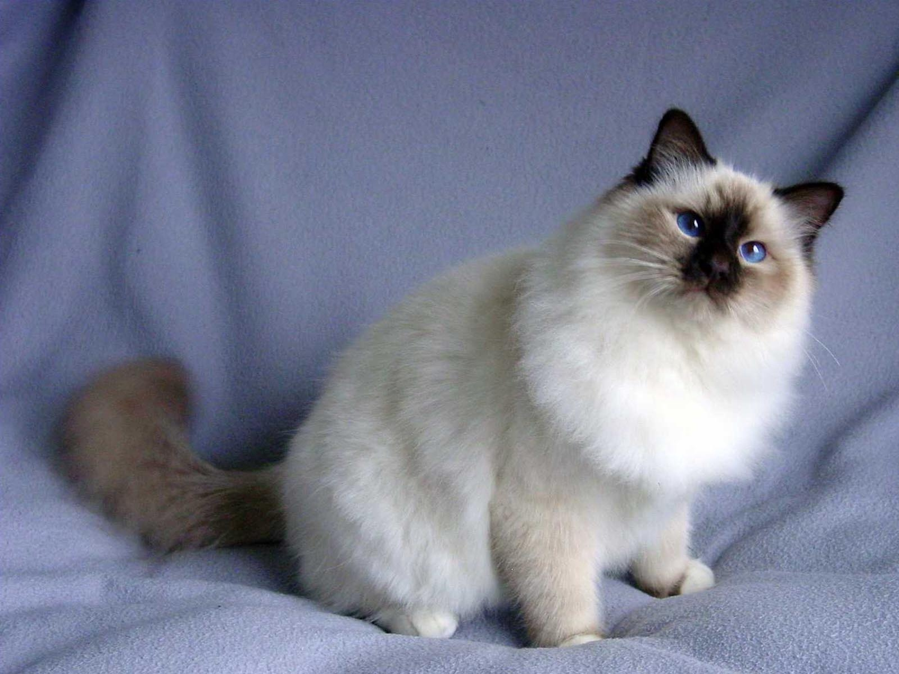

Ко́шка, или дома́шняя ко́шка (лат. Félis silvéstris cátus), — домашнее животное, одно из наиболее популярных (наряду с собакой) «животных-компаньонов». С точки зрения научной систематики, домашняя кошка — млекопитающее семейства кошачьих отряда хищных. Ранее домашнюю кошку нередко рассматривали как отдельный биологический вид. С точки зрения современной биологической систематики домашняя кошка (Felis silvestris catus) является подвидом лесной кошки (Felis silvestris). Являясь одиночным охотником на грызунов и других мелких животных, кошка — социальное животное, использующее для общения широкий диапазон звуковых сигналов, а также феромоны и движения тела. В настоящее время в мире насчитывается около 600 млн домашних кошек, выведено около 200 пород, от длинношёрстных (персидская кошка) до лишённых шерсти (сфинксы), признанных и зарегистрированных различными фелинологическими организациями. На протяжении 10 000 лет кошки ценятся человеком, в том числе за способность охотиться на грызунов и других домашних вредителей.
 В русском языке слово кошка означает либо представителя биологического подвида Felis silvestris catus вообще независимо от пола, либо самку этого подвида. Самца называют кот, а детёныша кошки — котёнок (мн. ч. котя́та). Слово кошка в русском языке является диминутивом от др.-русск. слова «котъка», которое в свою очередь происходит от существительного «кот» и является родственным лат. cattus — кошка (так в поздней латыни, начиная с V века, в отличие от классического латинского felis) и близким названиям во многих языках Европы и Ближнего Востока (англ. cat, арм. k’at’u, галл. cath, ирл. catt, исп. gato, итал. gatto, рут. gyat, лезг. кац, лит. katė, нем. Katze, нуб. kadis, прусск. catto, фр. chat, эспер. kato). Первоначальный источник неизвестен, но принято считать, что во многие языки слово попало из латинского. Некоторые исследователи предполагают, что в основе слов различных индоевропейских языков, обозначающих кошку, лежит праиндоевропейский корень «*kat-», от которого произошли глаголы индоевропейских языков, означающие «котиться», от которых позднее произошли названия детёнышей мелких животных на индоевропейских языках. Другие исследователи считают такую связь вторичным сближением. Звукоподражательными, близкими русскому «мяу», являются названия кошки в древнеегипетском (mj.w) и китайском языках (māo).
Информация взята из Википедии.